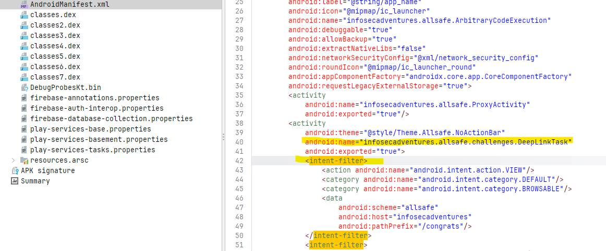

The Android building blocks behind the mobile writeups — .dex bytecode, the
manifest, and the IPC mechanisms that turn a single line into a real attack path. These are
Android-specific; the iOS equivalents (IPA/Mach-O, URL schemes, ATS) get their own page once a
Mac is in the lab.
Android bytecode · the app's compiled code
Dalvik EXecutable — Android's compiled-code format. Your Java/Kotlin is
compiled to JVM .class files, then a tool (d8/r8)
converts those into a single classes.dex of Dalvik/ART bytecode, optimized for
mobile. That classes.dex is your app's code; the runtime (ART) executes it.
A single dex caps at 65,536 method references — the "64K limit" — so bigger
apps spill into classes2.dex, classes3.dex, and so on
(multidex). AllSafe ships six, which by itself tells you it's a heavier Kotlin app than
a simple CTF box.
The .dex is what jadx runs backwards — .dex bytecode
→ readable Java — so it's where the app's logic lives and where static analysis happens. Two
caveats worth knowing: native code in lib/*.so is not in the dex
(that's reverse-engineering territory), and a near-empty classes.dex sitting next
to an encrypted blob in assets/ is a sign the app is packed — the
real dex is decrypted into memory at runtime.
Android IPC · attack surface
An Intent is a message: "Start this thing" or "Handle this
data." An <intent-filter> is a component saying "I can handle
messages that look like this."
So when it comes to the DeepLinkTask filter we saw in AllSafe, it is saying:
"I handle VIEW actions for URIs starting with
allsafe://infosecadventures/congrats."
exported controls
Whether other apps can start this component, or only the app itself.
exported="false" → internal only. Other apps can't touch it.exported="true" → any app on the device can invoke it, with whatever data they choose.exported,
publishing that component to every app on the device. Android 12 (SDK 31+) forced explicit
declaration for security. So don't read the absence of android:exported
as "not exported." Check the target SDK, check for an intent-filter, and reason from there.
Exported components are the app's undocumented public API. Real examples of what this enables:
BROWSABLE extends reachability to the web — a link on any webpage can invoke it.
DeepLinkTask activity,
reachable from any web page via its BROWSABLE deep link.